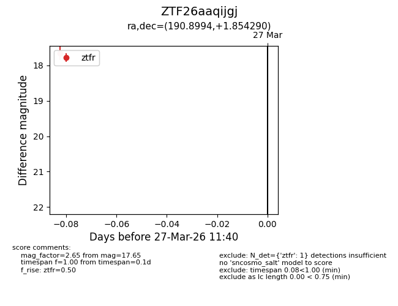
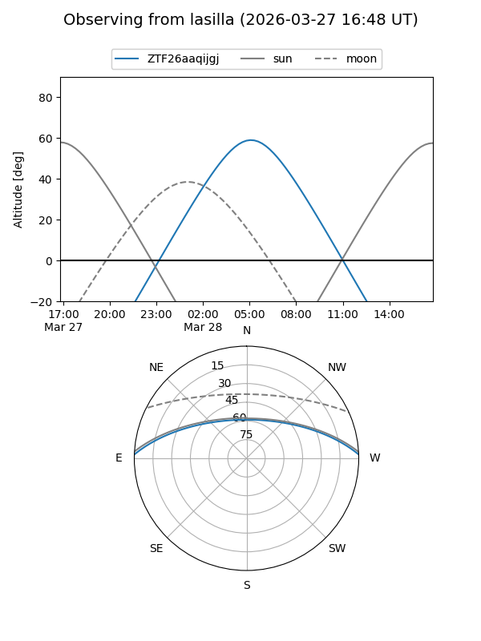
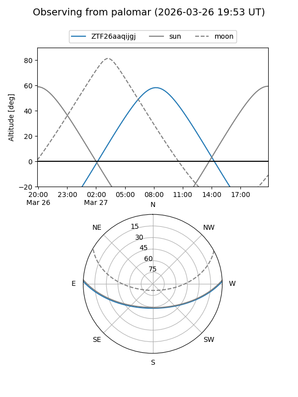

ZTF26aaqijgj
Target ZTF26aaqijgj at 2026-03-27 11:43
Aliases and brokers:
FINK: link
Lasair: link
ALeRCE: link
alt names
ZTF26aaqijgj (ztf,fink_ztf)
Coordinates:
equatorial (ra, dec) = 190.8994,+1.85429
equatorial (HMS+DMS) = 12:43:35.85,+01:51:15.44
galactic (l, b) = (298.3512,+64.65628)
Flags:
Photometry:
last ztfr=17.65
1 ztfr detections
Lightcurve

Visibility


Additional plots